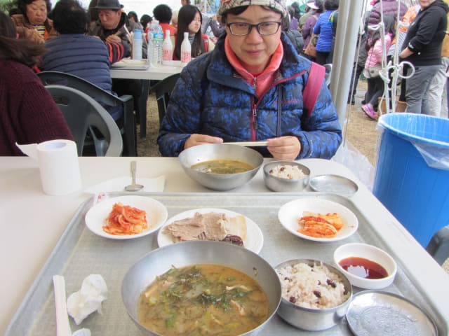

參觀完李仲燮故居, 想起他可以在這細小的房間, 生活條件那麼惡劣的情況下, 都可以創作出那麼多的代表作品, 深感敬佩。離開, 繼續在李仲燮公園四處閒逛, 看見前面人頭湧湧, 非常熱鬧, 便馬上走前看看, 發覺公園上下共有兩條長長的人龍, 好像在輪候什麼的。
首先看看公園下面的人龍, 真是神龍見尾不見首。看了一會, 人群越來越多, 都是當地的市民。
莫非有什麼免費的東西? 好奇之下, 便沿人龍繼續走前看個究竟。
來到龍頭, 原來是免費派發植物, 但不知是什麼植物, 只看到植物的根部用一團泥土包裹著, 上面露出約兩尺光禿禿的莖部。
李仲燮公園 免費滋味午餐
接著再看看公園上面的人龍, 感覺人潮比下面的人龍更多。看見帳棚下的旅客正在興高采烈地進食, 心想原來在排隊買東西吃!
場面那麼虛撼, 食物莫非很便宜, 說不定可以在這裡午餐, 便匆匆走到龍頭看看。
來到龍頭, 只見旅客拿著托盤去帳棚下取食物。
在帳棚的另一邊, 工人正忙碌地清潔碗盤。
再走前, 望望四周, 都沒有售票處, 便返回龍頭附近的帳棚。

在龍頭一帶徘徊了一會, 正猶豫之際, 有一位當地市民向我們示意快些去排隊, 想一想, 莫非食物是免費的? 便立即掉頭走回龍尾排隊。
其實有告示的, 只是我們看不懂。

人潮越來越多, 已經把整個場地擠滿。看看手錶, 剛好是中午十二時, 已經是午飯時間, 難怪那麼熱鬧。
耐心排隊吧, 也是一個新體驗。
排了約二十分鐘, 終於取了食物, 並很容易在其中一個帳棚下找到了座位。
食物頗豐富呢! 味道還十分美味! 大會還免費供應清酒, 可惜我們都不喝酒的。
用餐期間, 可能發現我們是外地遊客, 很意外及高興地接受了韓國某電視台的採訪, 不知道最終有沒有播出, 效果如何?
